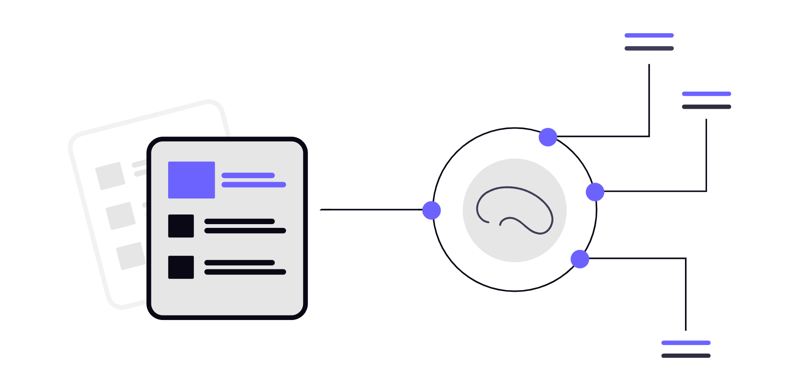
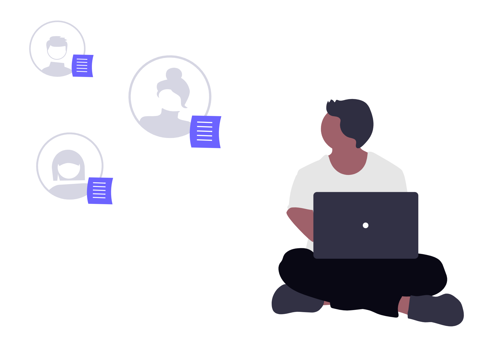
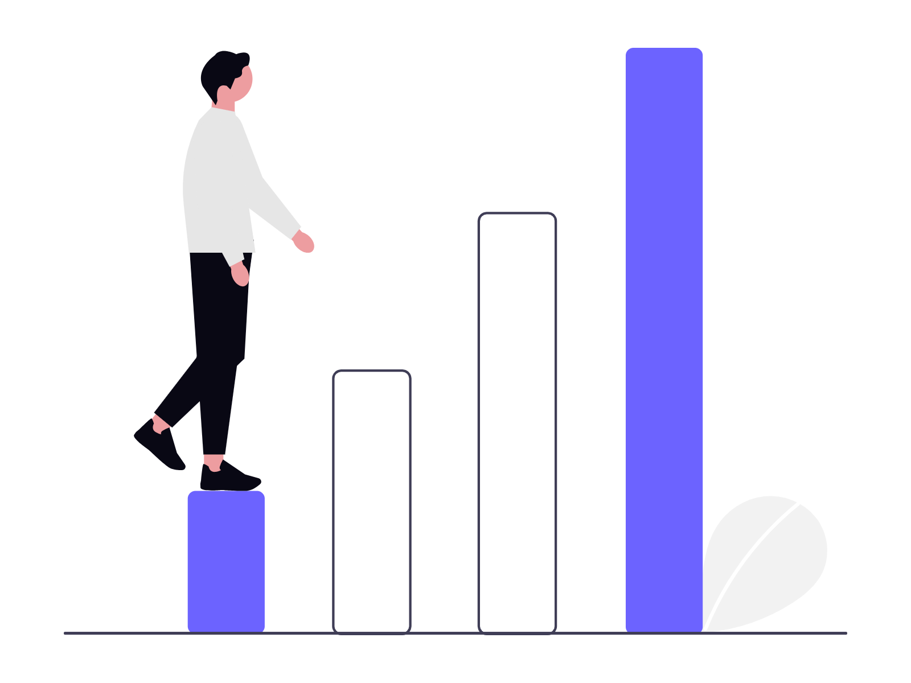

Prepare yourself for real-world interviews with an AI-powered interview assistant designed to make your practice smarter and more effective. Choose your desired role, experience level, and interview type, then face AI-generated questions that simulate a real interview experience. Get instant feedback, performance scores, and personalized suggestions to understand your strengths, improve your weak areas, and build the confidence you need to succeed in your next interview.

Experience realistic interview sessions powered by AI. Choose your role, experience level, difficulty, and interview type to receive questions tailored to your needs.

Get detailed feedback after every interview. Understand your strengths, identify mistakes, and receive a clear performance score to track how well you are improving.

Discover the areas where you need to improve and get actionable suggestions based on your performance. Focus your preparation on the topics and skills that matter most.